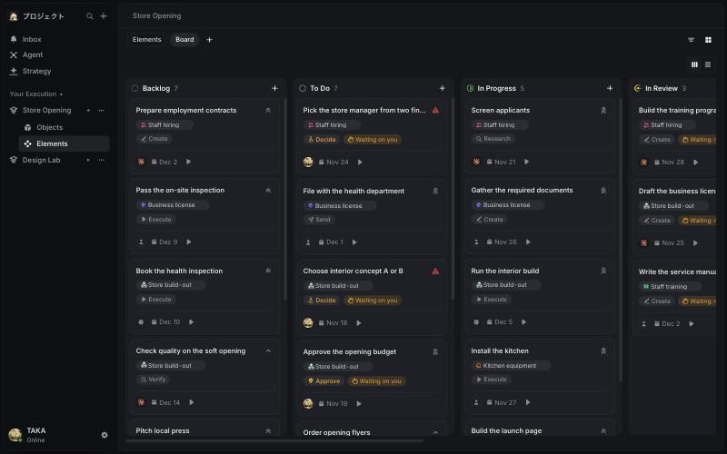

Set the goal, and follow it to the last step.
Write what you’re aiming for and how you’ll know you got there in Strategy. AI checks the assumptions with you and breaks it into Objects and Elements. Nothing starts until a person has looked.
- Write the StrategyPurpose, assumptions, decisions, success criteria
- Turn it into a planAI checks assumptions in conversation and splits it into Objects and Elements
- A person checksThe plan starts only after it’s reviewed
- Follow it throughProgress, deadlines, and drift from the Strategy


Three layers tie goals to actions.
Every Element can be traced back to what it’s for.
StrategyWhat to achieve, and how to win
Purpose, assumptions, decisions and success criteria. It nests, and the top one is what the Space is aiming for.
ObjectWhere Elements are gathered
Close to a project: a deadline, a lead, progress and milestones.
ElementThe smallest unit of action
It carries a verb such as research, create or approve. Judging, deciding, approving and answering stay with people.
See where you are, along the way.
- Progress belt
- As the margin to the deadline shrinks, the belt turns red from its tip.
- History line
- Work waiting for approval branches off, and rejoins once approved.
- Milestones
- A diamond fills in as the work due by it gets done.
- Status
- Objects and Strategies stand in one of five stages, each with statuses of your own.
- Why it exists
- From an Element, go back to the success criterion or decision behind it.
- Drift is flagged
- When a Strategy changes, the Elements it affects are shown.